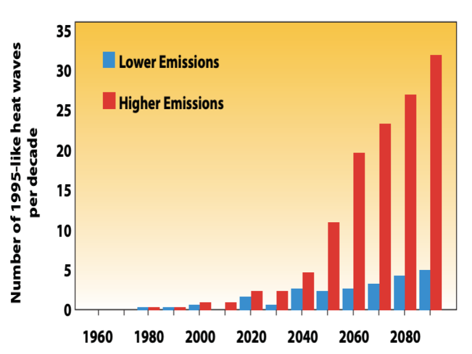

Overall Impacts
- Climate change impacts many areas of our lives including farming, air quality, and water quality.
- If climate change is not addressed, more extreme weather events such as flooding, droughts, and wildfires could occur that pose a threat to human safety.
- More heat waves will occur.

Impacts on the Midwest
- Decrease in agriculture productivity
- Increasing heat wave intensity and frequency will impact humidity levels, degrading air quality and reduced water quality will result in public health concerns
- Extreme rainfall will continue to increase causing erosion, decreased water quality, and negative impacts on transportation, agriculture, health and infrastructure
- Increasing invasive species and algae declining beach health
Impacts on Illinois
Climate/Energy
- Rate of warming in midwest from 1900-2010 has increased by 1.5 °F
- Approximately 95% of the electrical generating infrastructure in the Midwest is susceptible to decreased efficiency due to higher temperatures
- Since 1991 rainfall has increased significantly and has been the greatest in the Northeast, Midwest, and upper Great Plains – more than 30% above the 1901-1960 average.
Floods
- Increasing trends for flooding in the midwest and the flooding of local areas
Agriculture
- Future crop yields will be strongly impacted by weather events that change average temperature or annual precipitation.
- increased productivity of some crops due to higher temperatures, longer growing seasons, and elevated CO2 concentrations could be offset by increased freeze damage.
- Heat waves during pollination of field crops such as corn and soybean also reduce yields.
- For example, corn and soybean harvests in Illinois and Indiana, two major producers, were lower in years with average maximum summer (June, July, and August) temperatures higher than the average from 1980 to 2007.
Health
- More than 20 million people in the Midwest experience air quality that fails to meet national ambient air quality standards.
- Reduced air quality from human emissions and increased pollen season duration will be amplified with higher temperatures.
- Exposure to heat waves, and pollen → impact human health
Water
- Overall Quality: Major cities in the midwest utilize storm and sewage drainage systems but with increased asphalt and other impervious surfaces coupled with increased precipitation the overflow of sewage has caused the water quality to become degraded which is only predicted to worsen.
- Great Lakes: Higher temperatures, increases in precipitation, and lengthened growing seasons favor production of blue-green and toxic algae that can harm fish, water quality, habitats, and aesthetics, and could heighten the impact of invasive species that are already present.